World Download [ MEGAsync, 1.8gb ] 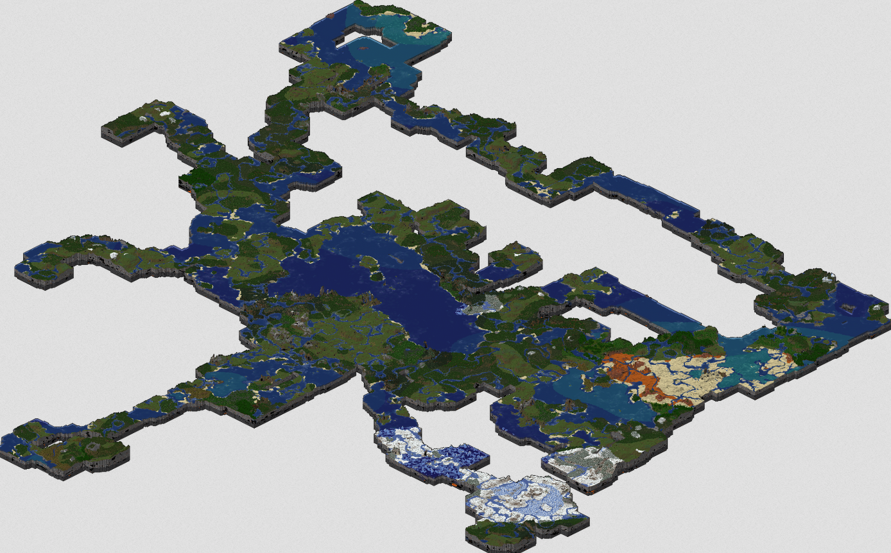
Final Explored Map (Isometric View)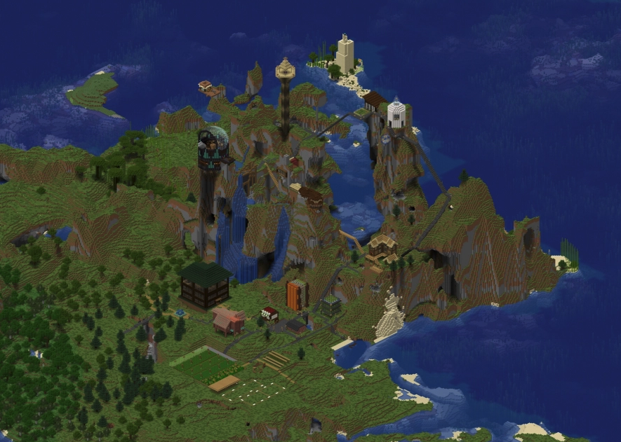
Altuo Peninsula (Isometric View)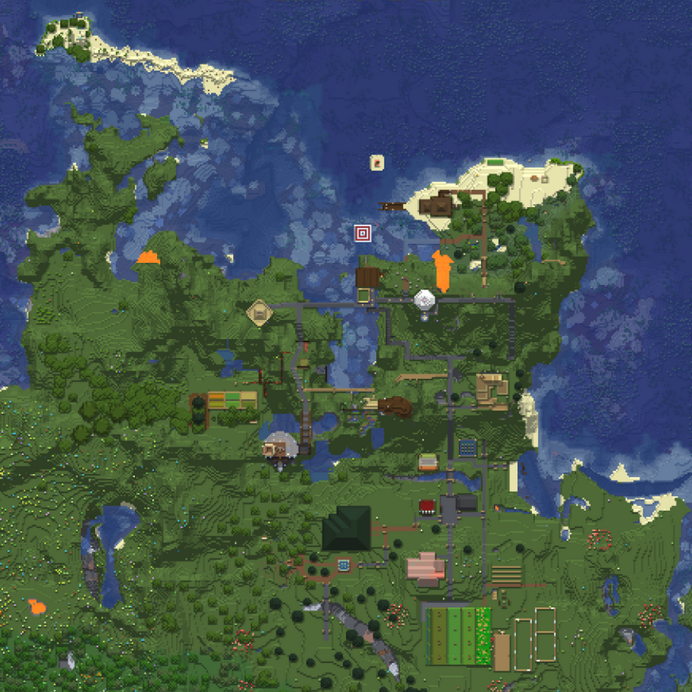
Altuo Peninsula (Map View)
Gallery
Post-Ender Dragon Battle (from Mar)Inside of Exposed Cave at Night (from Violet)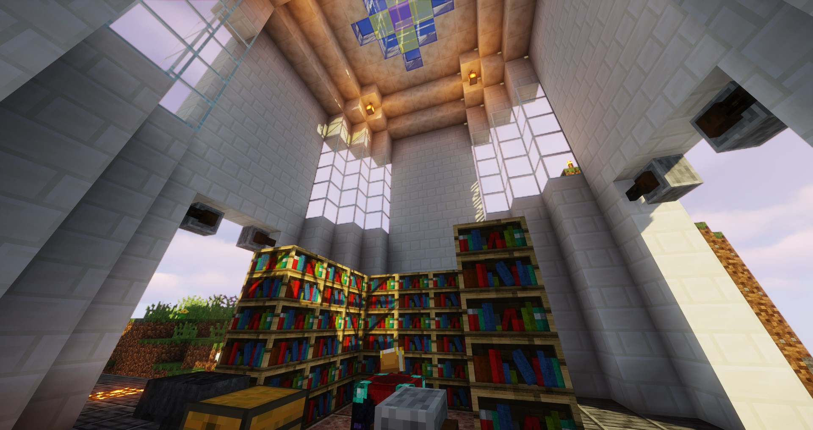The Altuo Conservatory (from Violet)Mar's Beach House at Night in the Snow (from Mar)Rodanthe Lighthouse at Night in the Rain (from Mar)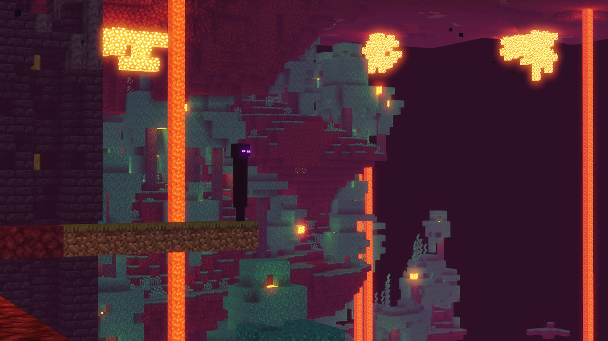Enderman Standing on a Ledge in the Nether (from Mar)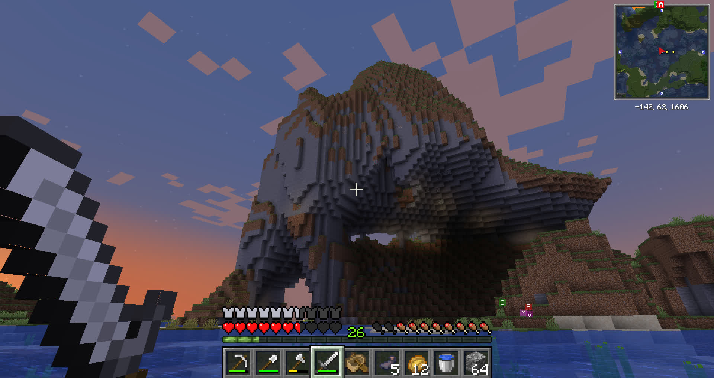Large Mountain-like Formation Above the Water at Sunrise (from Desu)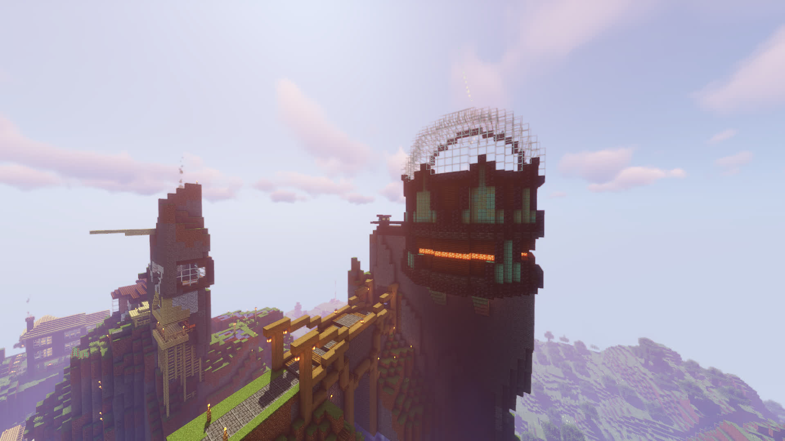Natty's Observatory (Distance) (from Violet)Natty's Observatory (Up Close) (from Violet)Northern Altuo at Sunrise (from Violet)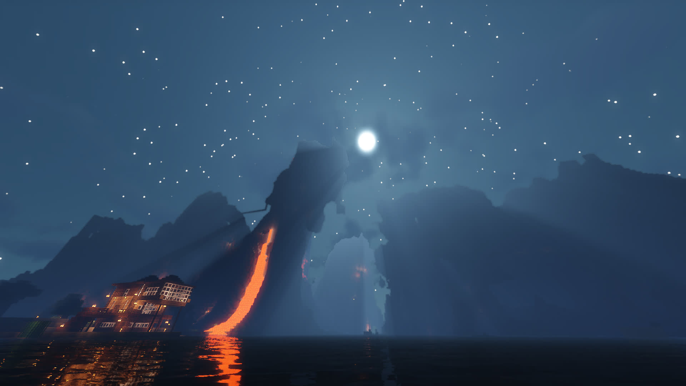Northern Altuo at Night With the Moon Overhead (from Violet)Altuo Peninsula from the West
[PNG] (from Desu)Deepslate Cave
[PNG] (from Desu)Music Disc Farm
[PNG] (from Desu)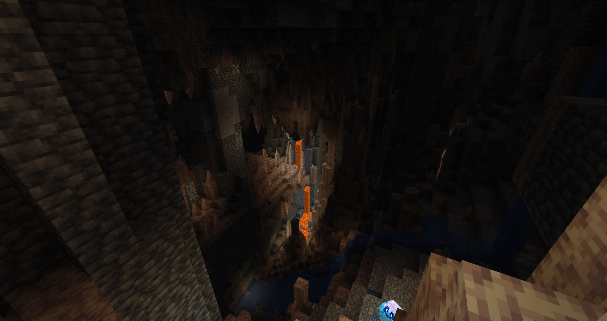Dripstone Cave
[PNG] (from Desu)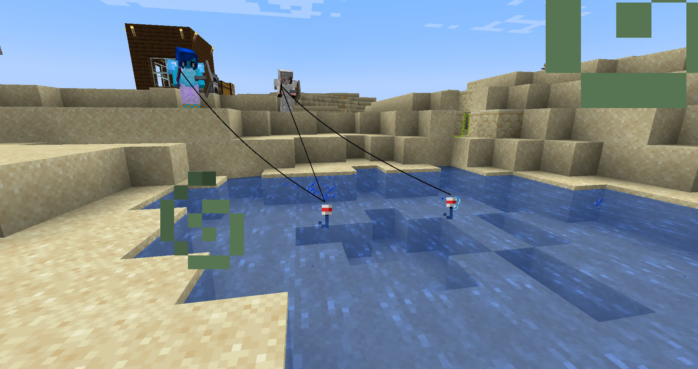Mar & Violet Fishing
[PNG] (from Desu)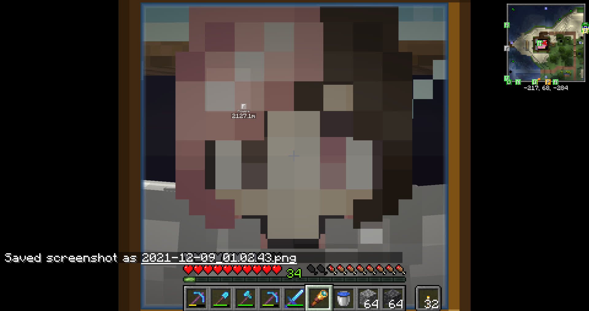Mar Through Spyglass
[PNG] (from Desu)Desu's Pumpkin+Melon Farm
[PNG] (from Desu)Desu's In-mountain Home
[PNG] (from Desu)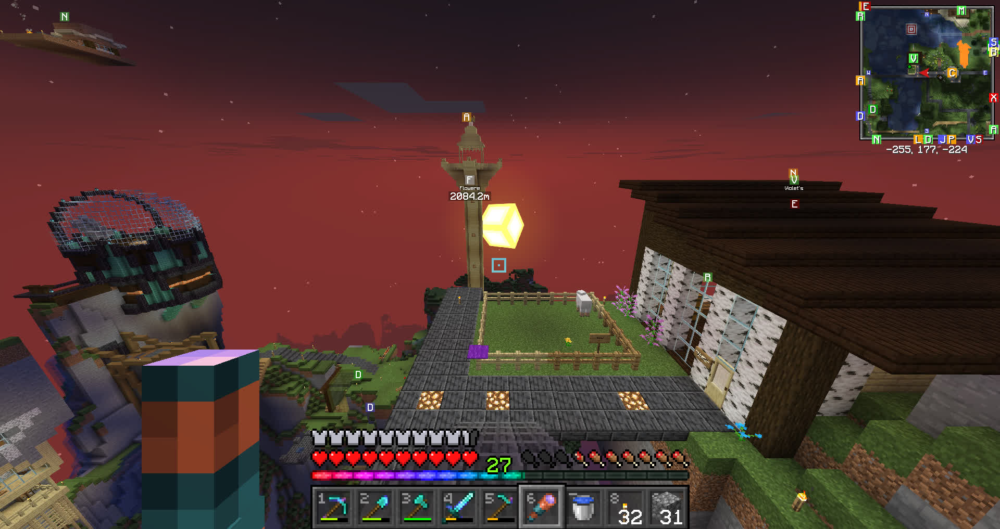North Hillside Altuo
[PNG] (from Desu)Altuo Observatory (Interior)
[PNG] (from Desu)Altuo Observatory (Interior)
[PNG] (from Desu)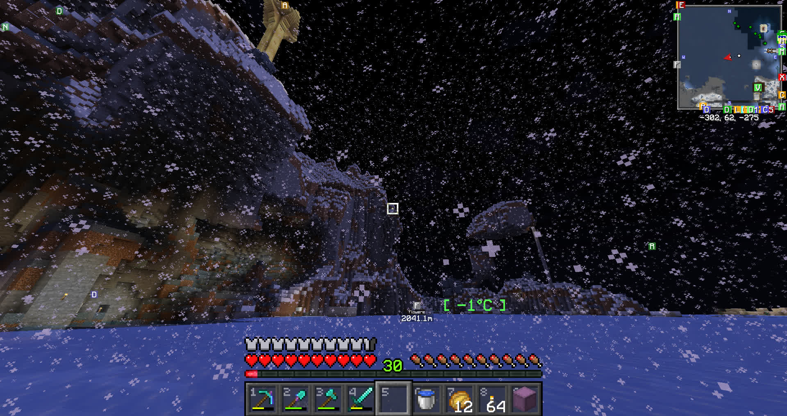Altuo in Winter
[PNG] (from Desu)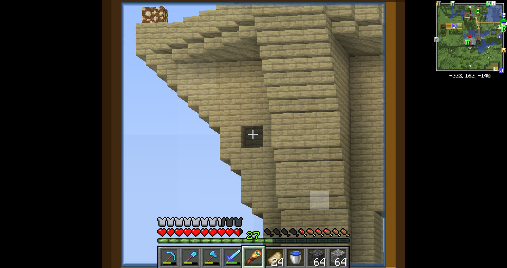Altuo Tower Through Spyglass
[PNG] (from Desu)Construction of Town Hall
[PNG] (from Desu)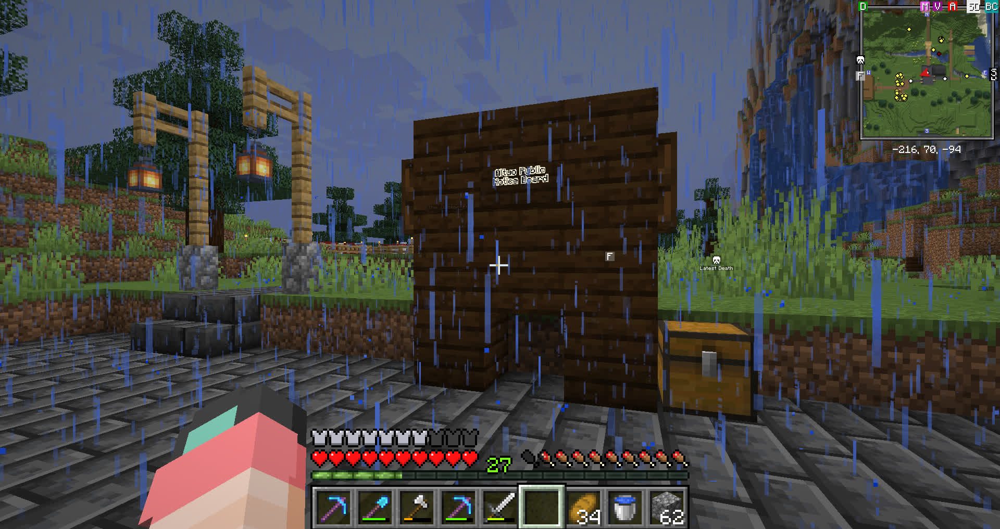Altuo Townside Bulletin Board
[PNG] (from Desu)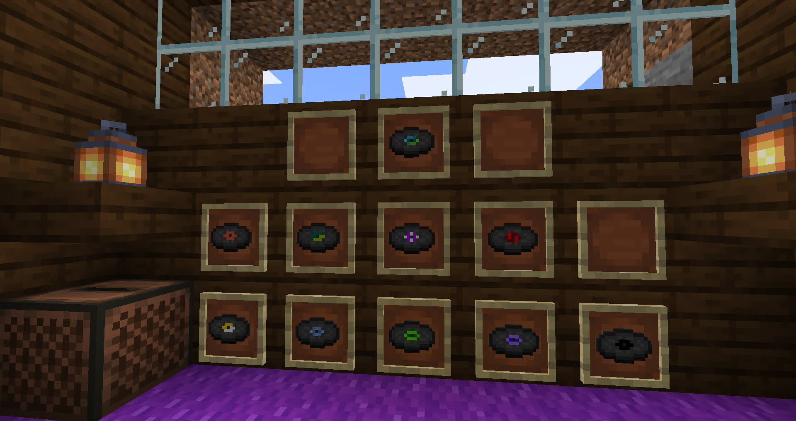Violet's Disc Collection
[PNG] (from Desu)


![[PNG]](bcr3/png/desu-altuofromwest.png){kind=link}

![[PNG]](bcr3/png/desu-deepslatecave.png){kind=link}

![[PNG]](bcr3/png/desu-discfarm.png){kind=link}
![[PNG]](bcr3/png/desu-dripstonecave.png){kind=link}
![[PNG]](bcr3/png/desu-fishing.png){kind=link}
![[PNG]](bcr3/png/desu-marglass.png){kind=link}

![[PNG]](bcr3/png/desu-melonfarm.png){kind=link}

![[PNG]](bcr3/png/desu-mountainhouse.png){kind=link}
![[PNG]](bcr3/png/desu-northtown.png){kind=link}

![[PNG]](bcr3/png/desu-observatoryint1.png){kind=link}

![[PNG]](bcr3/png/desu-observatoryint2.png){kind=link}
![[PNG]](bcr3/png/desu-snowing.png){kind=link}
![[PNG]](bcr3/png/desu-towerglass.png){kind=link}

![[PNG]](bcr3/png/desu-townhallconstruction.png){kind=link}
![[PNG]](bcr3/png/desu-townsideboard.png){kind=link}
![[PNG]](bcr3/png/desu-virecords.png){kind=link}